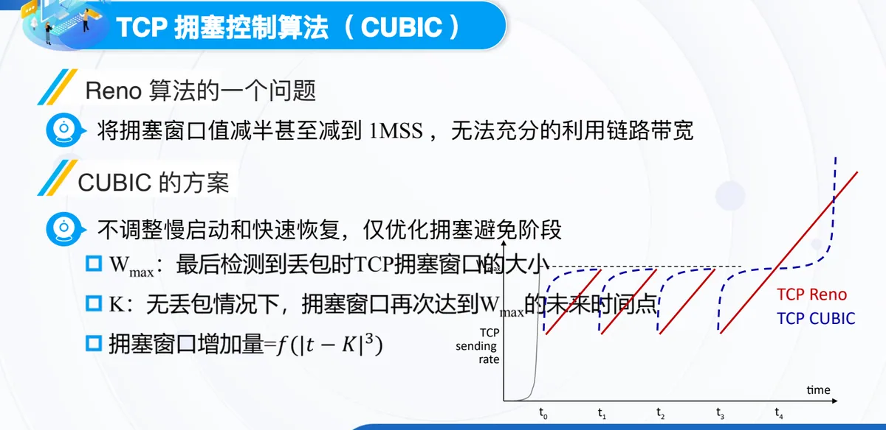
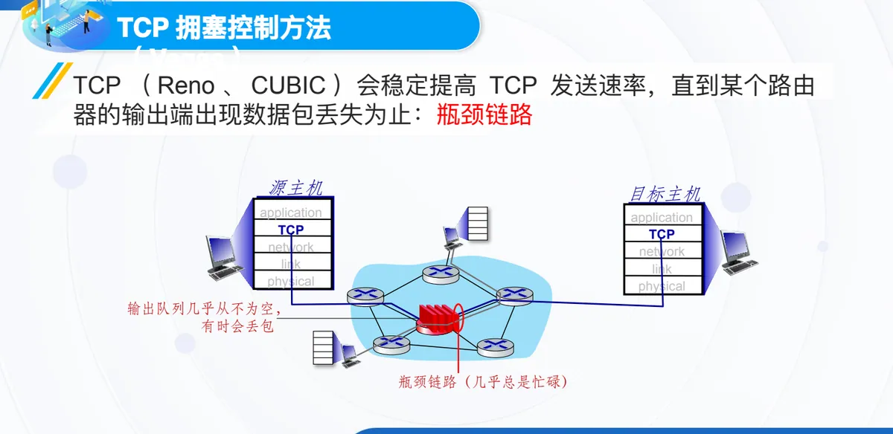
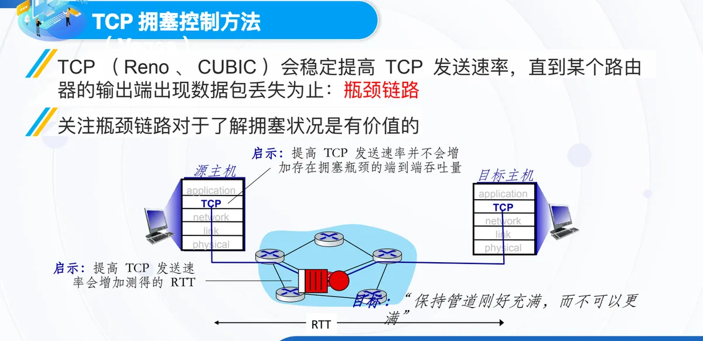
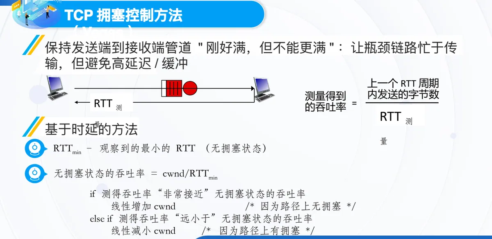
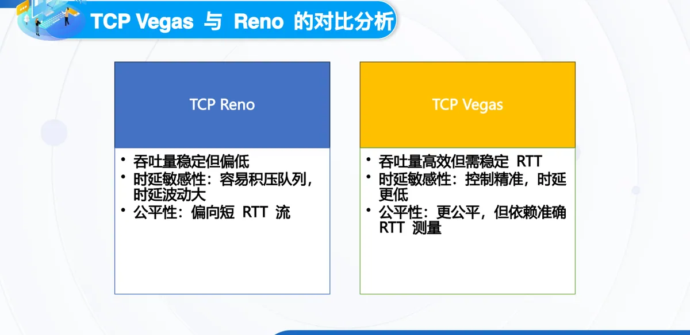

计算机通信与网络 · 第二版讲义 · 第 6 章 网络中的拥塞控制
6.5 TCP拥塞控制的演进（New Reno、CUBIC、Vegas、BBR）
6.4 节的 TCP 拥塞控制把丢包当作拥塞信号：窗口一路涨到路由器开始丢包，再退回去重来。本节看四种后继算法各要解决什么——New Reno 修补快速恢复的重传判断，CUBIC 只想让拥塞避免阶段的窗口恢复更快，Vegas 改用排队时延作信号，BBR 则直接测量路径的瓶颈带宽与最小 RTT。
1. New Reno：用一个 Recovery 变量减少无效重传
快速恢复期间有一个判断问题：每收到一个确认都要判断「拥塞过去没有」，判断错了不是白压窗口，就是无谓重传。New Reno 算法在进入快速重传时记下当时已发送的最高报文段序号，即 Recovery，判断于是变成一次比较：新 ACK 的序号不大于 Recovery，说明它仍对应拥塞之前发出的数据，发送方不退出快速恢复，而是重传该 ACK 之后的报文段，把丢失的报文段逐个补上；ACK 序号一旦大于 Recovery，说明拥塞期间发出的数据已被确认，便立即退出快速恢复并收缩到门限值。
遗留的问题是部分分组可能已经被接收，只是确认没能及时返回，New Reno 仍会逐个重传，造成无意义的重发。解决办法是在 TCP 报文段的选项字段中增加 SACK（选择重传），由接收方告知已收到哪些报文段，发送方只重传真正缺失的部分。
2. CUBIC：只优化拥塞避免阶段
Reno 系列算法的通病出在拥塞后的退避动作上：检测到拥塞就把拥塞窗口值减半，严重时甚至减到 1 MSS（最大报文段），发送速率骤降，链路带宽长期用不满；在高带宽、长时延的路径上，窗口爬回原大小要花掉许多个往返时间。CUBIC 算法针对的正是这一段：它不调整慢启动和快速恢复，仅优化拥塞避免阶段。
CUBIC 记下发生拥塞时的窗口值 Wmax，把窗口增长交给一条以时间为自变量的三次函数曲线：窗口较快回升，接近 Wmax 时收敛变缓，以免再次冲撞拥塞点。

3. Vegas：把排队时延当作拥塞信号
Reno 与 CUBIC 都是稳定提高 TCP 发送速率，直到某个路由器的输出端出现数据包丢失——这条链路即瓶颈链路，它的输出队列几乎从不为空、有时会丢包，链路本身几乎总是忙碌。课件由此得出两点启示：提高发送速率不会增加存在拥塞瓶颈时的端到端吞吐量，多出的分组只是堆在队列里；但它会增加测量到的 RTT。Vegas 算法改用的信号正是排队时延与 RTT 的变化。

Vegas 的目标是保持发送端到接收端的管道「刚好满，但不能更满」：让瓶颈链路忙于传输，又避免高延迟与缓冲区堆积。它比较两个吞吐率——无拥塞状态的吞吐率＝cwnd/RTTmin，RTTmin 是观察到的最小的 RTT；测得吞吐率＝上一个 RTT 周期内发送的字节数 ／ RTT 测量值。

规则是：测得吞吐率「非常接近」无拥塞状态的吞吐率，说明无拥塞，线性增加 cwnd；「远小于」说明有拥塞，线性减小 cwnd。这对界限由门限 α、β 划定：差值落在最佳窗口范围 [α, β] 内维持不变，小于 α 调大窗口，大于 β 调小窗口，速率便稳定在既不浪费带宽、又不堆高时延的区间。

课件还说明了这条路线的落地：一些已部署的 TCP 采用了这种基于时延的方法，在保持低时延（「……但不是更满」）的同时最大化吞吐率（「保持管道满……」），拥塞控制中不存在诱导或强制的性能损失；谷歌内部骨干网就部署了 Vegas 的一种实现方法 BBR。
4. Vegas 的三处改造：重传、拥塞避免与慢启动
重传方面，传统 TCP 依赖三重 ACK 或重传超时，反应慢；Vegas 利用 RTT 变化检测潜在丢包，若 RTT 超过一定阈值（如超时）就提前重传丢失的段。它维护一个 RTT 基准值，据此判断是否有分组未被 ACK 且等待时间超过估计 RTT，从而更快检测丢包。
拥塞避免方面，目标是让网络处于高利用率而不拥塞的状态：动态测量 Actual 与 Expected 的差值，把发送速率维持在 [α, β] 内，每经过一个 RTT 按差值微调一次 cwnd，因此比丢包反应更早、更平滑。慢启动方面，传统慢启动指数增长过快、易丢包，Vegas 早期仍保持指数增长，检测到 RTT 急剧增加即转为线性增长：先快速探测网络容量，拥塞临近时平滑进入拥塞避免，减少突发拥塞，提高稳定性。
5. Vegas 与 Reno 的对比
把两者并列，得失就很清楚：Reno 吞吐量稳定但偏低，Vegas 高效却需要稳定的 RTT；时延敏感性上，Reno 容易积压队列、时延波动大，Vegas 控制精准、时延更低；公平性上，Reno 偏向短 RTT 流，Vegas 更公平，但依赖准确的 RTT 测量。

6. BBR：绕开丢包，直接建模瓶颈
Vegas 拿时延当信号，但拥塞仍要先在队列里积累，算法才有反应。课件把传统 TCP 算法（如 Reno、CUBIC）的毛病归为两点：依赖丢包或延迟作为拥塞信号，拥塞控制是「被动」反应，容易造成低吞吐或高延迟；网络状态剧烈变化时反应迟钝、恢复慢。BBR 拥塞控制算法的动机是从根本上建模网络瓶颈状态，主动预测瓶颈带宽和最小 RTT，实现不依赖丢包、不依赖队列积压的拥塞控制，以最大化带宽利用、最小化延迟，跳出丢包驱动的框架。
它的核心模型只有两个量：BtlBW（瓶颈带宽）是路径上最大可达的吞吐量，RTprop（往返传播时延）是最小 RTT、不含排队延迟。拥塞窗口因此可以直接算出：CWND = BtlBW × Rtprop。这一乘积正是管道恰好被填满时在途的数据量，与前面「保持管道刚好充满」的目标一脉相承，区别在于它是测出来的，不是试出来的。
7. BBR 的控制周期与性能评估
两个估计量需要持续校准，BBR 用一个 8 个 RTT 的控制周期来组织：ProbeBW 探测更大带宽，用周期性加速看路径能否承受更高速率；ProbeRTT 短暂降低窗口，以获取真正的最小 RTT；Startup 在初期快速增长，找出初始瓶颈；Drain 清空上一阶段留在队列里的分组，防止过度拥塞。它不依赖丢包判断拥塞，避免了传统 TCP 中的 bufferbloat（缓冲区膨胀）。
课件给出三方面优势：高带宽利用率，因为准确估计瓶颈带宽、不盲目增加窗口；低延迟，因为避免拥塞窗口过大造成排队时延；对非拥塞丢包更鲁棒，无线网络中的随机丢包不会被误判为拥塞。挑战同样明确：与基于丢包的 TCP（如 Reno、CUBIC）存在公平性问题；对 RTT 抖动敏感，在不稳定网络中可能不稳定；网络路径频繁变化时估计不准。因此它适用于高带宽、低丢包、对延迟敏感的网络，例如视频与实时传输。
本节小结
- New Reno 用 Recovery 记录进入快速重传时已发送的最高报文段序号：ACK 序号不大于它就继续重传、不退出快速恢复，大于它才退出并收缩到门限值；已被接收分组的无意义重发由 SACK 选择重传解决；
- CUBIC 认为把窗口减半、甚至减到 1 MSS 无法充分利用带宽，于是不动慢启动和快速恢复，只用 Wmax 与一条以时间为自变量的三次函数曲线，把拥塞避免阶段的窗口尽快恢复到 Wmax 附近；
- Vegas 不等丢包，而用排队时延与 RTT 变化判断拥塞：比较 cwnd/RTTmin 与实测吞吐率，差值在 [α, β] 内维持窗口，偏小增加、偏大减小，目标是「保持管道刚好满，但不能更满」；它的重传、拥塞避免与慢启动都做了改造，代价是依赖准确的 RTT 测量；
- 与 Reno 相比，Vegas 吞吐量更高、时延更低、对短 RTT 流更公平，但需要稳定的 RTT 环境；这条路线的代表实现是部署在谷歌骨干网上的 BBR；
- BBR 以瓶颈带宽 BtlBW 与往返传播时延 RTprop 建模路径，按 CWND = BtlBW × Rtprop 设置窗口，并用 8 个 RTT 的控制周期轮转 Startup、Drain、ProbeBW、ProbeRTT 四个阶段；
- BBR 的优势是高带宽利用率、低延迟与对非拥塞丢包更鲁棒，局限是与基于丢包的 TCP 之间的公平性、对 RTT 抖动的敏感性以及路径频繁变化时的估计精度，适合高带宽、低丢包、对延迟敏感的网络；6.6 节将把拥塞控制放到数据中心网络的场景中继续讨论。